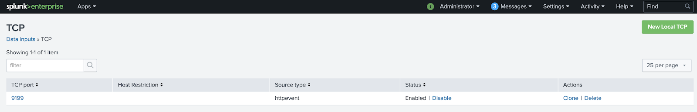
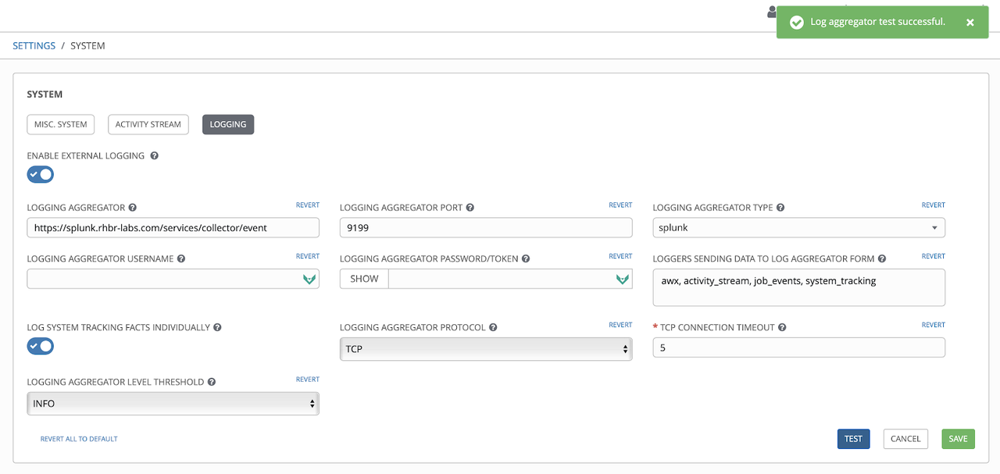
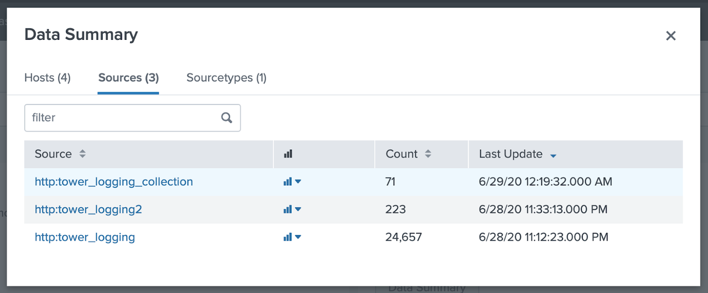
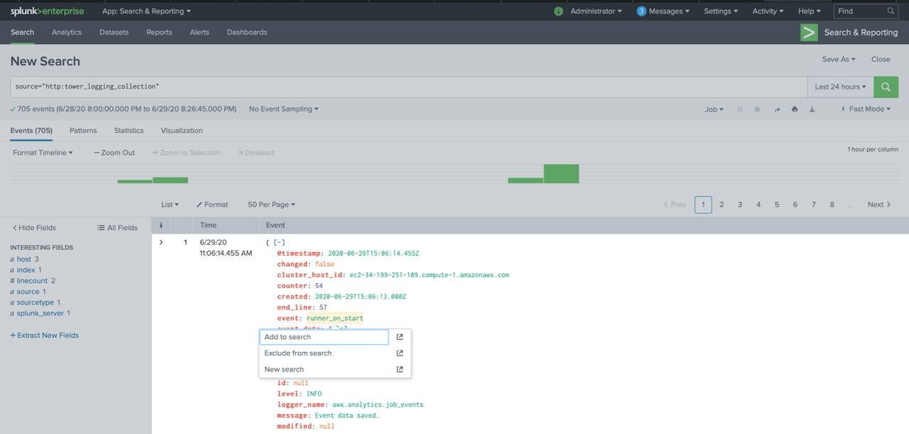
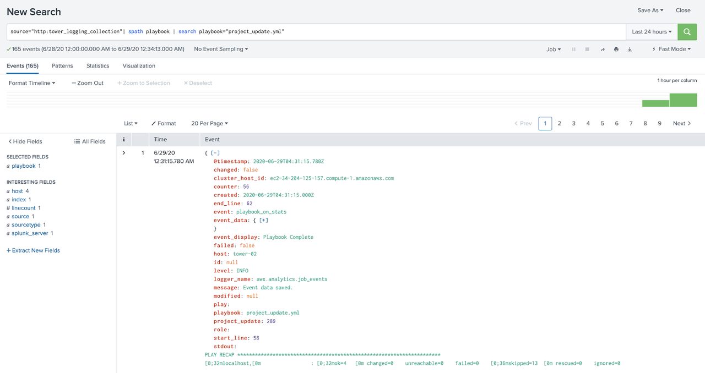
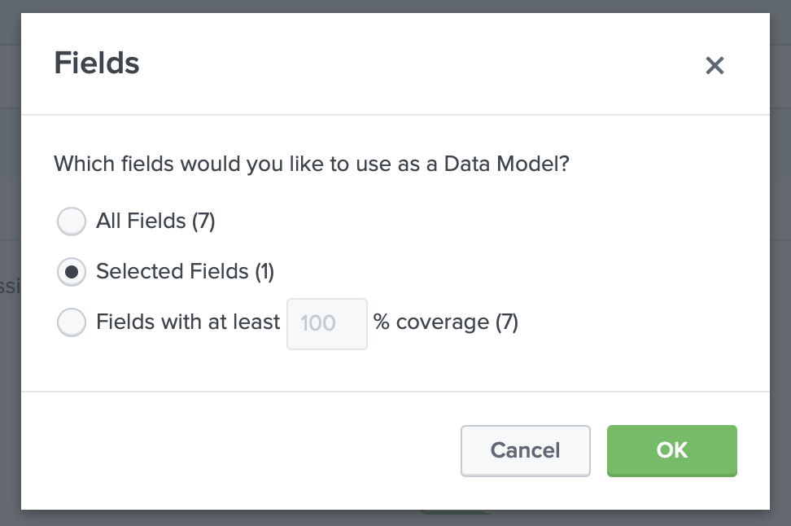
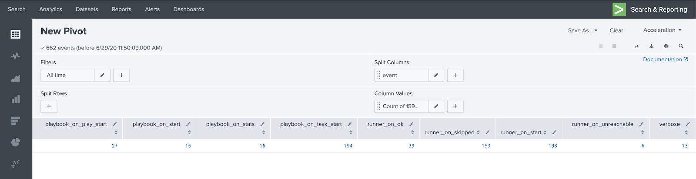
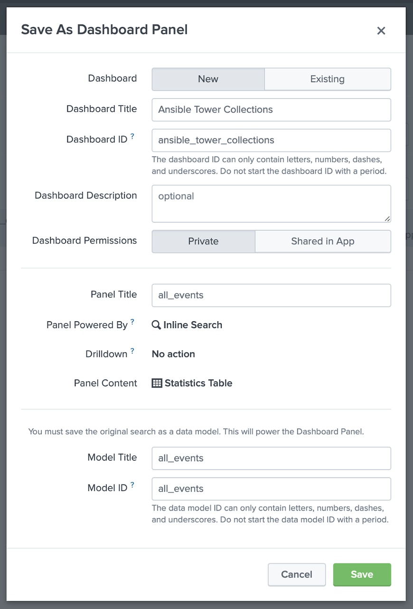
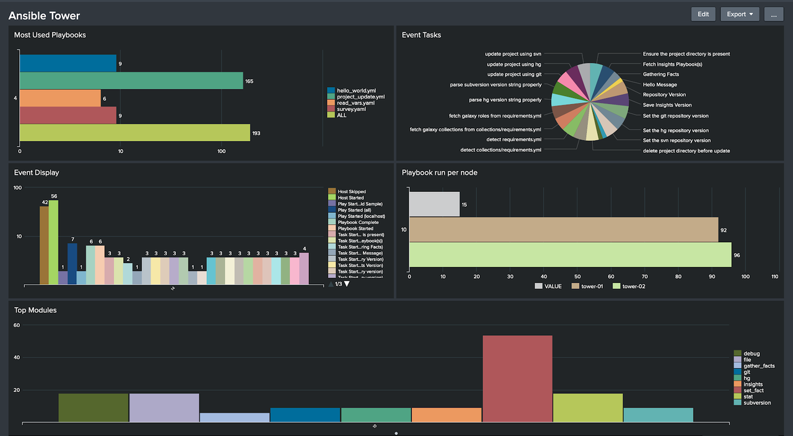

Centralize your Automation Logs with Ansible Tower and Splunk Enterprise
Centralize your Automation Logs with Ansible Tower and Splunk Enterprise
For many IT teams, automation is a core component these days. But automation is not something on it's own - it is a part of a puzzle and needs to interact with the surrounding IT. So one way to grade automation is how well it integrates with other tooling of the IT ecosystem - like the central logging infrastructure. After all, through the central logging the IT team can quickly survey what is happening, where, and what the state of it is.
The Red Hat Ansible Automation Platform is a solution to build and operate automation at scale. As part of the platform, Ansible Tower integrates well with external logging solutions, such as Splunk, and it is easy to set that up. In this blog post we will demonstrate how to perform the necessary configurations in both Splunk and Ansible Tower to let them work well together.
Setup of Splunk
The first step is to get Splunk up and running. You can download a Splunk RPM after you register yourself at the Splunk home page.
After the registration, download the rpm and perform the installation:
$ rpm -ivh splunk-8.0.3-a6754d8441bf-linux-2.6-x86_64.rpm warning: splunk-8.0.3-a6754d8441bf-linux-2.6-x86_64.rpm: Header V4 RSA/SHA256 Signature, key ID b3cd4420: NOKEY Verifying... ################################# [100%] Preparing... ################################# [100%] Updating / installing... 1:splunk-8.0.3-a6754d8441bf ################################# [100%] complete
After the installation is complete, execute the command below to start the service and make the necessary settings.
$ /opt/splunk/bin/splunk start -accept-license
Accept the terms, set the username and password, and wait for the service to start.
All preliminary checks passed. Starting splunk server daemon (splunkd)... Done [ OK ] Waiting for web server at http://127.0.0.1:8000 to be available... Done If you get stuck, we're here to help. Look for answers here: http://docs.splunk.com The Splunk web interface is at http://splunk-server:8000
Access the web interface and enter the username and password.
Configuring Data Input with Red Hat Ansible Content Collections
To receive the Ansible Tower logs in Splunk, we need to create a Data Input TCP. To do that we will use the Splunk Enterprise Security Content Collection available on Automation Hub as part of the Red Hat-Maintained Content Collections release.
This Collection has been created to support Splunk Enterprise Security, a security product delivered as an add-on application for Splunk Enterprise and extends that to deliver Security Information and Event Management (SIEM) functionalities. Splunk Enterprise Security leverages many capabilities of the underlying platform hence, despite having been developed for security automation use cases, most of the modules in this Collection can be used to support Day 0 and Day 1 IT Operations use cases as well. If you want to read more about how Ansible Content Collections developed as part of the Ansible security automation initiative can help to overcome security operation challenges, check out our blog post "Getting started with Ansible security automation: investigation enrichment" from our Roland Wolters.
The Splunk Enterprise Security Content Collection has the following modules as of today:
-
adaptive_response_notable_event- Manage Splunk Enterprise Security Notable Event Adaptive Responses -
correlation_search- Manage Splunk Enterprise Security Correlation Searches -
correlation_search_info- Manage Splunk Enterprise Security Correlation Searches -
data_input_monitor- Manage Splunk Data Inputs of type Monitor -
data_input_network- Manage Splunk Data Inputs of type TCP or UDP
If you want to learn more about collections in general and how to get started with them, check out our blog post "Hands on with Ansible collections" from our Ajay Chenampara.
Coming back to our use case, we will use the data_input_network module.
First let's install the Collection splunk.es:
$ ansible-galaxy collection install splunk.es Process install dependency map Starting collection install process Installing 'splunk.es:1.0.0' to '/root/.ansible/collections/ansible_collections/splunk/es'
After the installation of the Collection, the next step is to create our inventory:
[splunk] splunk.customer.com [splunk:vars] ansible_network_os=splunk.es.splunk ansible_user=USER ansible_httpapi_pass=PASS ansible_httpapi_port=8089 ansible_httpapi_use_ssl=yes ansible_httpapi_validate_certs=True ansible_connection=httpapi
Note that we set the connection type to httpapi: the communication with Splunk Enterprise Security takes place via REST API. Also, remember to adjust the authentication, port and certificate data according to your environment.
Next let's create the playbook which will set up the input network:
--- - name: Splunk Data Input hosts: splunk gather_facts: False collections: - splunk.es tasks: - name: create splunk_data_input_network splunk.es.data_input_network: name: "9199" protocol: "tcp" source: "http:tower_logging_collections" sourcetype: "httpevent" state: "present"
Let's run the playbook to create the input network:
$ ansible-playbook -i inventory.ini splunk_with_collections.yml
Validating Data Input
To validate if our data input was created, in the Splunk web interface, click on Settings -> Data inputs -> TCP. Verify that the TCP port is listed as a source type "httpevent" like in the screenshot below:

We can also validate the data input by checking if the port 9199 is open and does receive connections:
$ telnet splunk.customer.com 9199 Trying 1.2.3.4... Connected to splunk.customer.com. Escape character is '^]'.
Configuring Ansible Tower
The activity stream logs in Ansible Tower provide information on creating and deleting objects, such as logging activities within the Ansible Tower, for more information and details, check out the documentation.
After Splunk is all set up, let's dive into Ansible Tower, and connect
both tools with each other! First we are going to configure Ansible
Tower to send logs to Data Input in Splunk. For this, we enter the
Ansible Tower Settings: there, pick "System" and click "Logging". This
opens an overview of the logging configuration of Ansible Tower as shown
below. In there, we specify the URL for Splunk as well as the URL
context /services/collector/event. Also, we have to provide the
port, here 9199, and select the right aggregator type, here Splunk. Now
select protocol TCP, and click first the "Save" button and then, to
verify our configuration, the "Test" button.

Viewing the logs in Splunk
Now that Ansible Tower is all set up, let's head back to Splunk and check if the logs are making their way there. In Splunk home, click on "Search & Reporting". In "What to Search" pick "Data Summary". A window will open up, where you can click on the "Sources" column:

Click on the source http:tower_logging_collection, this will take us to the Search screen, where it is possible to view the records received from Ansible Tower:

If all is working fine, you should see the last log events received from Ansible Tower, showing that the two tools are now properly connected. Congratulations!
But we don't want to stop there: after all, logging is all about analyzing the incoming information and making sense of it. So let's create a filter: click on the field you'd like to filter, to be filtered and then pick "Add to search".

After that, the search field will be filled with our filter.

Creating a simple dashboard
In this example, we will create a simple graph of the events generated by Ansible Tower.
We will use the previous step on how to create a filter, but this time we will filter the event field and in the search field we will leave it this way:
source="http:tower_logging_collection"| spath event | search event=*
With event = * all events are filtered. After that click on the
"All Fields" button on the left side menu, select the event field and
click on exit. That done, click on Visualization and then select the
Pivot option, in the window select "Selected Fields (1)" and click OK.

In this window, we will keep the filters as "All time", in "Split Columns" select event and then "Add To Table", after that we can already have a view of the information separated in columns with the name of the column being the event and their number of appearances in the logs.

After viewing the information in columns, click "Save As" and select "Dashboard Panel". In "Dashboard" select "New", in "Dashboard Title" define the name you want for the Dashboard, this name will generate the Dashboard ID, in Panel Title and Model Title, define the name of this search, for example all_events and click Save and then View Dashboard.

In the following screen, click on Edit in the upper right menu then in the all_events panel click on "Select Visualization", choose the visualization you want, in this example we select "Bar Chart" and click "Save".

Now that we have our dashboard with a chart listing all events, repeat the process of creating filters and in saving the search, select an existing dashboard to add new panels to the dashboard we created.
After creating some panels and adding them to the existing dashboard, we will have a visualization like this:

To use more advanced features of integrating Ansible Tower with Splunk, see the Collection Splunk_enterprise_security, which will allow you to configure Data Inputs and search correlation options, among other features.
Takeaways and where to go next
In this post, we demonstrate how to send the Ansible Tower usage logs to Splunk to enable a centralized view of all events generated by Ansible Tower. That way we can create graphs from various information, such as the number of playbooks that failed or succeeded, modules most used in the executed playbooks and so on.